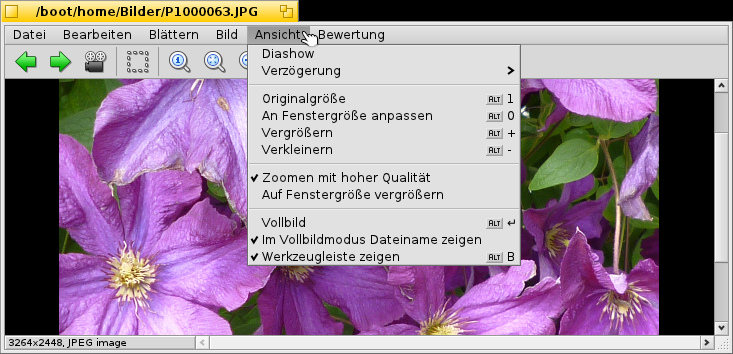
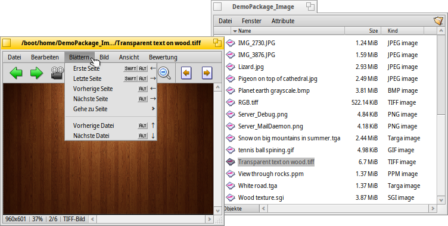

Deutsch
Deutsch Français
Français Italiano
Italiano Русский
Русский Español
Español Svenska
Svenska 日本語
日本語 Українська
Українська 中文 ［中文］
中文 ［中文］ Português
Português Suomi
Suomi Slovenčina
Slovenčina Magyar
Magyar Português (Brazil)
Português (Brazil) English
English Bildbetrachter
Bildbetrachter
| Deskbar: | kein Eintrag; wird über Doppelklick auf eine entspechende Datei aufgerufen. | |
| Ort: | /boot/System/apps/Bildbetrachter | |
| Einstellungen: | ~/Konfiguration/settings/ShowImage_settings |
Im Bildbetrachter lassen sich Bilder in allen Formaten anzeigen, die durch Translatoren unterstützt werden. Neue Formate werden automatisch erkannt, sobald ihr Translator installiert wurde. So geschah das zum Beispiel für Haikus Vektoricon-Dateien, WonderBrush-Dateien oder als WebP-Bilder weitere Verbreitung fanden.
Der Bildbetrachter bietet einige der wichtigsten Bearbeitungsmöglichkeiten, wie das Beschneiden, Drehen oder Spiegeln von Bildern und das Speichern in verschiedenen Formaten.
 Bilder anzeigen
Bilder anzeigen

Unter lässt sich eine aller Bilder eines Ordners (oder dem Ergebnisfenster einer Query) starten und dafür eine zwischen 2 und 20 Sekunden einstellen.
Andere Befehle beziehen sich immer auf das aktuell dargestellte Bild (ohne die Fenstergröße zu ändern):
zeigt das Bild mit einem Vergrößerungsfaktor von 100%.
passt das Bild ins Fenster ein, z.B. nachdem das Bild gezoomt oder die Fenstergröße geändert wurde.
und ändert die Ansicht in 10%-Schritten. Auch mit dem Mausrad lässt sich zoomen; ist ein Bild größer als das Fenster, lässt sich der Bildausschnitt mit der linken Maustaste verschieben.
Zwei Einstellungen gelten nicht nur für das aktuell dargestellte Bild, sondern bleiben auch erhalten wenn man mehrere Bilder durchsieht:
wendet zur Bildverbesserung einen schnellen Filter an, um Stufeneffekte beim Zoom abzuschwächen.
zieht kleinere Bilder auf Fenstergröße auf.
Bilder lassen sich im Modus darstellen, die Option blendet den Dateinamen immer unten im Bild ein.
Mittels werden die Bedienelemente aus- und eingeblendet:

Von links nach rechts: Vorheriges Bild, nächstes Bild, Diashow (im Vollbildmodus), Auswahlmodus, Originalgröße, an Fenstergröße anpassen, vergrößern, verkleinern.
Die meisten der oft benutzten Befehle erscheinen beim Rechtsklick auf ein Bild auch in einem Kontextmenü. Das ist besonders praktisch im Vollbildmodus.
Bilder durchsehen

Nachdem ein Bild geöffnet wurde, kann man schnell alle anderen Bilder in dessen Ordner (oder Ergebnisfenster einer Query) durchsehen, indem man ↑/↓ oder ←/→ drückt. Dabei sieht man wie sich die markierte Datei im Tracker-Fenster mit verändert.
Es besteht die Möglichkeit schnell den Ordner des aktuellen Bilds zu öffnen und sogar zu dessen übergeordneten Ordner oder Unterordnern zu navigieren. Das funktioniert genauso wie das Navigieren per Untermenüs im Tracker, indem man auf den Info-Teil in der Statusleiste klickt, in dem Größe und Dateiformat des aktuellen Bilds angezeigt werden.
Unter findet sich eine andere Art von Bilder-Durchsehen: Einige Dateiformate, beispielweise TIFF, können mehrere Seiten in einer Datei unterbringen. Mit Befehlen wie und lassen sich diese Seiten anspringen.
Bilder bearbeiten

Unter finden sich einige für Bildbetrachter nötige Befehle zur Bildbearbeitung: Rotieren und Spiegeln von Bildern. Dabei werden die eigentlichen Bilddaten jedoch nicht verändert. Es wird lediglich ein Attribut an die Datei gehängt, damit sie beim nächsten Öffnen gleich automatisch gedreht oder gespiegelt angezeigt wird.
öffnet das Einstellungsfenster für Hintergründe, um das aktuelle Bild als Hintergrund für Arbeitsflächen zu verwenden.
Manchmal möchte man ein Bild auch auf einen Ausschnitt beschneiden. Um den Schnittrahmen zu setzen, kann man unter in den wechseln und mit der linken Maustaste einen Rahmen aufziehen. Den Wechsel in den Auswahlmodus kann man sich sparen, indem man einfach STRG gedrückt hält bevor man den Rahmen aufzieht (sonst würde man ja maximal den Bildausschnitt verschieben).
oder ESC lässt den Rahmen wieder verschwinden.
Das nächste Kapitel beschreibt wie man den so abgesteckten Bildausschnitt abspeichert.
Bilder speichern und konvertieren
Mittels aus dem Menü, lässt sich ein Bild in einem beliebigen Format speichern, indem man das entsprechende Format aus dem Untermenü wählt und anschließend einen Namen vergibt.
Besonders wenn das Tracker-Fenster mit dem Speicherziel bereits geöffnet ist, geht das meist noch schneller per Drag & Drop.

Auf diese Weise bringt man auch das oben beschriebene Beschneiden zum Abschluss. Entweder man zieht wie dort beschrieben einen Rahmen auf, oder benutzt für das gesamte Bild. Dann klickt man in den Auswahlrahmen und zieht ihn auf den Desktop oder irgendein anderes Tracker-Fenster, um einen neuen Bildausschnitt im selben Format wie das Originalbild zu erstellen.
Das Speichern in einem anderen Format funktioniert genauso, nur verwendet man stattdessen die rechte Maustaste, wodurch beim Fallenlassen der Auswahl ein Kontextmenü erscheint aus dem das gewünschte Format zu wählen ist.
Tastaturkürzel
Hier einige der nützlichsten Tastenkürzel:
| ← / ↑ | Vorheriges Bild | |
| → / ↓ | Nächstes Bild | |
| ENTF | In den Papierkorb verschieben | |
| + | Vergrößern | |
| - | Verkleinern | |
| 0 | Originalgröße (100% Zoom) | |
| 1 | An Fenstergröße anpassen | |
| ALT RETURN | Wechsel in/aus Vollbildmodus (auch per Doppelklick) | |
| STRG | Bei gedrückter STRG Taste lässt sich ein Auswahlrahmen aufziehen, ohne extra in den Auswahlmodus wechseln zu müssen. |